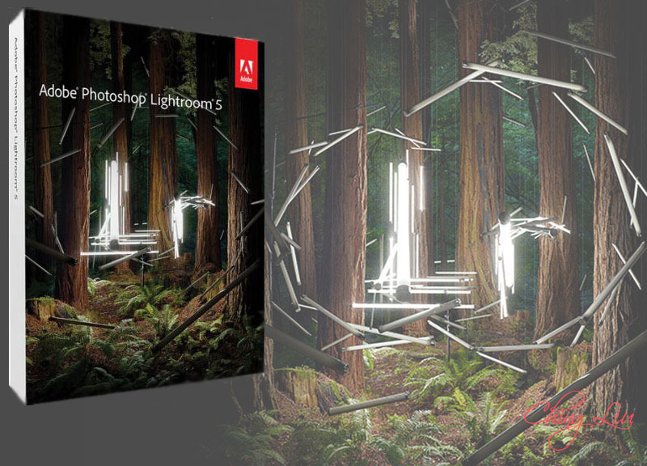

============================
Stats
Title: Adobe Photoshop Lightroom 5.6 Final Mac OS X [ChingLiu]
Category: Apps
Type: Mac
Language: English
Total size: 511.7 MB
Uploaded By: ChingLiu
============================
Info:
!!! Remember I don't own or edit anything on links that might be on this torrent!!!

FEATURES NEW Advanced Healing Brush - Don't let dust spots, splotches, or other distractions and flaws get in the way of a great shot. With the Advanced Healing Brush in Adobe® Photoshop® Lightroom® 5, you can not only change the brush size but also move it in precise paths. Unwanted scene elements even those with irregular shapes such as threads just disappear. NEW Upright - Straighten tilted images with a single click. The new Upright™ tool analyzes images and detects skewed horizontal and vertical lines, even straightening shots where the horizon is hidden. NEW Radial Gradient - Emphasize important parts of your image with more flexibility and control. The Radial Gradient tool lets you create off-center vignette effects, or multiple vignetted areas within a single image NEW Smart Previews - Easily work with images without bringing your entire library with you. Just generate smaller stand-in files of your full-size images. Any adjustments or metadata additions you make to these files will automatically be applied to the originals. NEW Video slide shows - Easily share your work in elegant video slide shows. Combine still images, video clips, and music in creative HD videos that can be viewed on almost any computer or device. NEW Improved photo book creation - Create beautiful photo books from your images. Lightroom 5 includes a variety of easy-to-use book templates, and now you can edit them to create a customized look. Upload your book for printing with just a few clicks. Receive 25% off from Blurb* on your first book created using Lightroom 5. Location-based organization - Find, group, and tag images by location, or plot a photo journey. Automatically display location data from GPS-enabled cameras and camera phones. Highlight and shadow recovery - Bring out all the detail that your camera captures in dark shadows and bright highlights. Now you have more power than ever before to create great images in challenging light. Advanced black-and-white conversion - Gain powerful control over the tonal qualities that make or break black-and-white images. Precisely mix information from eight color channels when you convert to grayscale. Fast cross-platform performance - Speed up day-to-day imaging tasks and process images faster with cross-platform 64-bit support for the latest Mac OS and Windows® operating systems. Tight Photoshop integration - Select one or multiple photos and automatically open them in Photoshop to perform detailed, pixel-level editing. See your results immediately back in Lightroom. Get Lightroom 5 and Photoshop CC together plus Adobe Premiere® Pro CC and more in Adobe Creative Cloud™. Selective adjustment brushes - Expand your creative control with flexible brushes that let you adjust targeted areas of your photo for just the look you want. Selectively adjust brightness, contrast, white balance, sharpness, noise reduction, moiré removal, and much more. Superior noise reduction - Get amazing, natural-looking results from your high ISO images with state-of-the-art noise reduction technology. Apply noise reduction to the entire image, or target specific areas. Nondestructive environment - Set your creativity free in a nondestructive editing environment that lets you experiment without limits. Your original images are never altered, and it's easy to reverse your steps or save multiple versions of any photo. Develop presets - Save time by instantly applying favorite looks to images. Store Develop settings as presets and apply them to your other photographs at any time with one click. Many presets are included, and thousands more are available from Lightroom photographers and experts. New Features in Lightroom 5.6: New Camera Support in Lightroom 5.6 -Nikon D810 -Panasonic LUMIX AG-GH4 -Panasonic LUMIX DMC-FZ1000 New Lens Profile Support *Check homepage: http://blogs.adobe.com/lightroomjournal/2014/07/lightroom-5-6-now-available.html Bugs Corrected in Lightroom 5.6 -Collections with a custom sort order would sometimes not properly sync with Lightroom mobile. -Updated the “Adobe Standard” color profile for the Nikon D810. Please note that this only impacts customers who used Camera Raw 8.6 or DNG Converter 8.6 to convert NEF raw files from the D810 to DNG -Star ratings set in Lightroom mobile did not properly sync to Lightroom desktop. Please note that this only occurred on images that were added to Lightroom mobile from the camera roll -Resolved the issues causing the persistent “Syncing … images” state that some of our customers have reported.” -Star ratings would sometimes not sync from Lightroom desktop to Lightroom mobile. Please note that this only occurred when attempting to sync a Collection that contained more than 100 photos that already contained star ratings. -Added information to the “System Info” dialogue to help designate if the customer installed Lightroom from the Creative Cloud. -Unable to open sRaw files from the Nikon D810. Please note that this only impacted customers that converted D810 sRaw files to DNG in either Camera Raw 8.6 RC or DNG Converter 8.6 RC. -Images with invalid GPS coordinates would not properly sync with Lightroom mobile -Lightroom occasionally crashed when changing image selection on Windows. Please note that this only occurred on the Windows platform. -JPEG files exported from Lightroom would not open or be available to edit within Canon Digital Photo Professional application software. -Lightroom would run in reduced functionality mode when it should not. System requirements -Processor: Multicore Intel® processor with 64-bit support -OS: MAC OS X 10.7 (Lion) or later -RAM: 2 GB (4 GB Recommended) -Hard Disk: 2 GB of available hard-disk space -Display: 1024 x 768 Monitor Resolution Languages : English, Deutsch, Español, Français, Italiano, Nederlands, Português (Brasil), Svenska, 日本語, 简体中文, 繁體中文, 한국어 Homepage : https://www.adobe.com/products/photoshop-lightroom/features.html